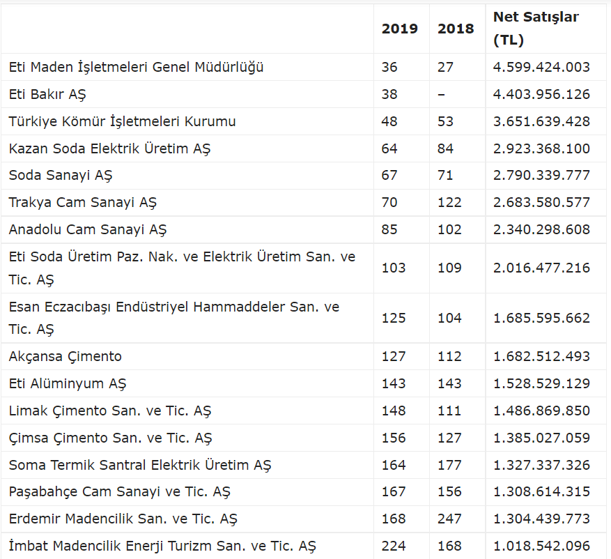

Her yıl İstanbul Sanayi Odası (İSO) tarafından oluşturulan en büyük “500 Sanayi Kuruluşu Listesi” açıklandı. Açıklanan verilere göre sanayinin zirvesinde, 87 milyar 949 milyon liralık üretimden satış ile yine Tüpraş yer aldı. Türkiye’nin 500 büyük sanayi kuruluşunun net satışları ise 2018 yılına göre yüzde 16,2 artarak 1 trilyon 21 milyar 869 milyon lira olarak gerçekleşti. En büyük şirketlerin ağırlıklı olarak petrokimya, otomotiv, savunma sanayi ve demir-çelik sektörlerinden yer aldığı araştırmada, madencilik sektörüne doğrudan bağlı birçok firma (Metal maden üretimi, çimento üretimi, beton üretimi, cam ve seramik sanayi) her sene olduğu gibi listede yerini aldı.
2019 Yılı 500 Sanayi Şirketi listesinin maden ve madencilikle ilişkili şirketler sıralamasında bir numarada Eti Maden İşletmeleri bulunurken iki numarada Eti Bakır ve üçüncü sırada ise Türkiye Kömür İşletmeleri yer aldı.
Eti Maden’in 2018 yılına göre satışları 2019 yılında %2,6 oranında düşüş yaşarken şirket İSO 500’de 2018 yılına göre 27. sıradan 36. sıraya gerildi.
2019 Yılı 500 Sanayi Şirketi listesinin maden ve madencilikle ilişkili şirketler sıralamasında ikinci sırada yer alan Eti Bakır AŞ ise geçen yıl sıralamada yer almazken bu sene 4 milyar 403 milyon TL net satış gerçekleştirerek İSO 500’e 38. sıradan girdi.
Türkiye Kömür İşletmeleri (TKİ), 2019 yılında sıralamada 5 sıra yükselerek 48. sırada kendisine yer bulurken TKİ’yi maden ve madencilikle ilişkili şirketler sıralamasında dördüncü sırada bulunan ve bu yıl 20 basamak birden yükselerek İSO 500’de 64. sırada yer alan Kazan Soda Elektrik Üretim AŞ takip etti.
2018 yılı İSO 500 sıralamasında yer almayan Demir Export ise 2019 İSO 500 sıralamasında kendisine 461. sırada yer buldu.

.png)